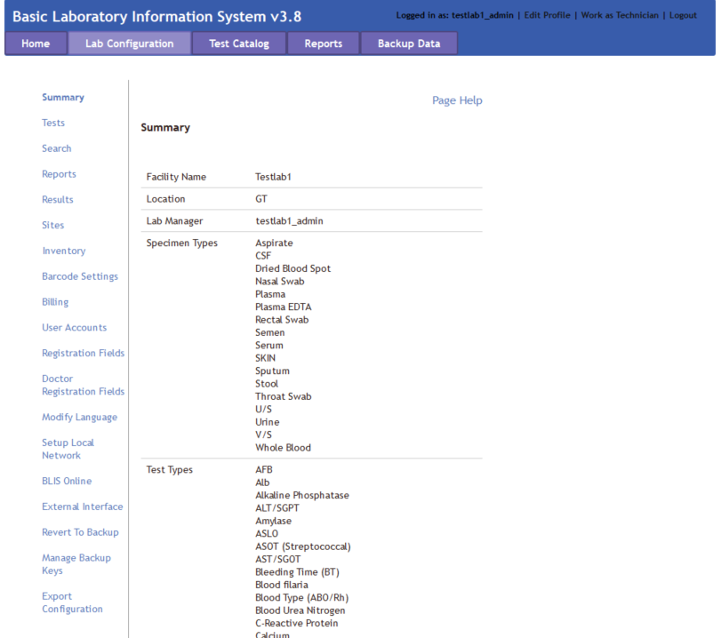
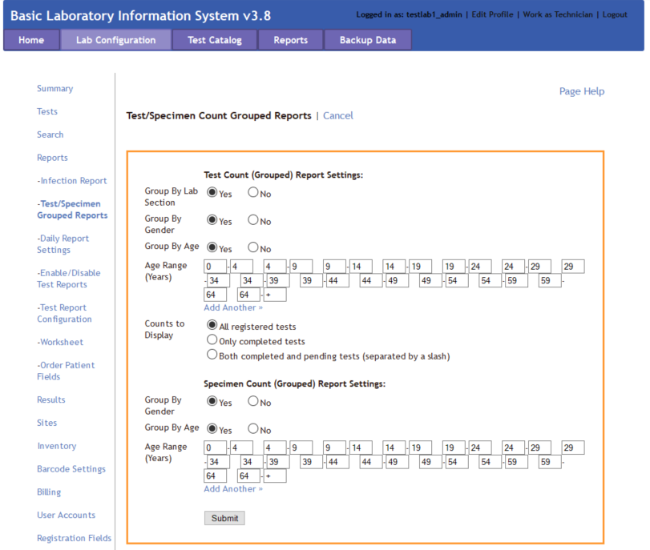
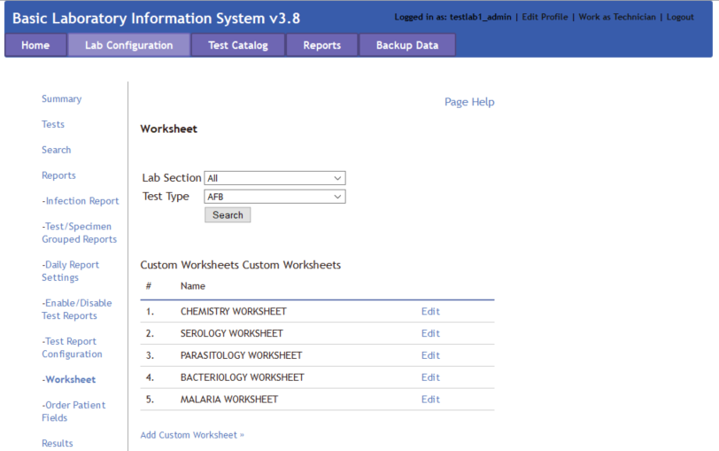
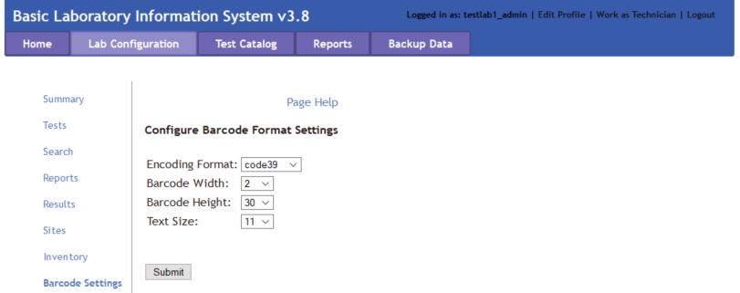
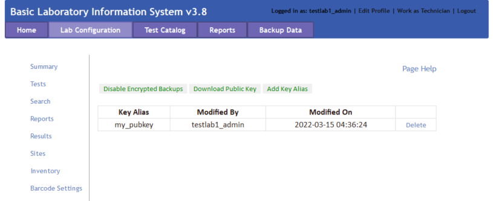
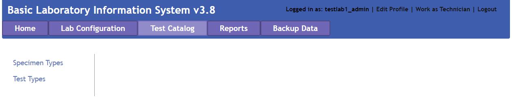
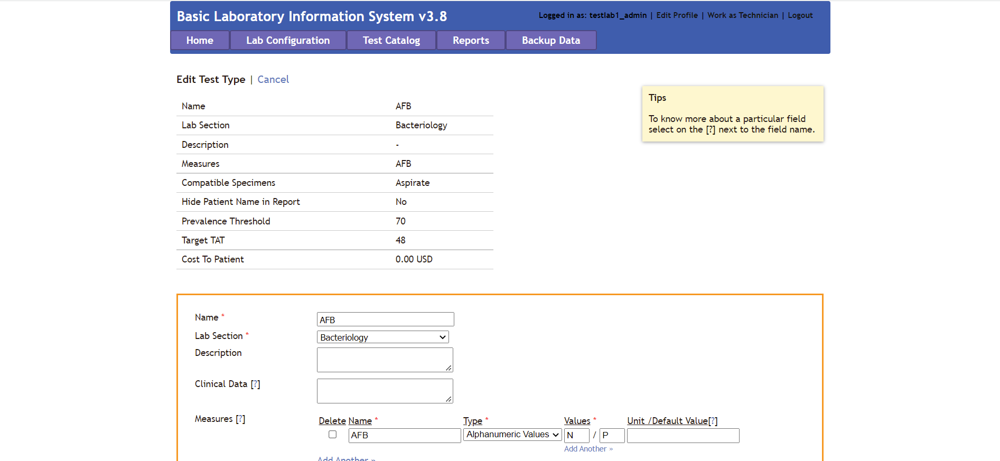
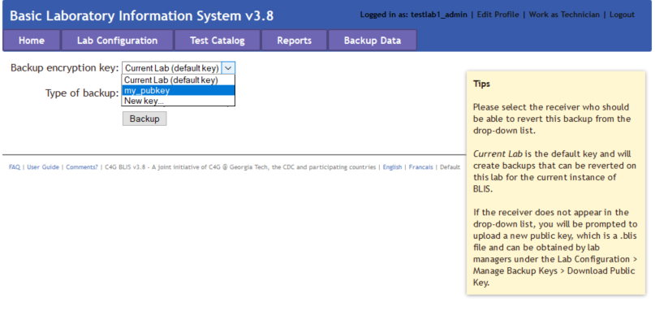

Manager Overview¶
The manager interface allows the Manager to do the following:
- Add, edit, and delete users
- Change the laboratory configuration settings in the Lab Configuration tab in the top menu bar
- Generate and print reports in the Reports tab in the top menu bar
Manager Lab Configuration¶
The laboratory configuration can be changed by Managers or admin users of BLIS. Here, Lab Managers can change how reports are generated, what patient data is collected, as well as various other settings. In general, laboratory settings are usually initialized by the Country Director, but can be modified to suit individual labs' needs.
Summary¶
The Summary page displays information about the laboratory. Specific information includes the Facility Name, Location, Lab Manager, available Specimen Types, available Test Types, and Technician Accounts allocated to the specific laboratory.

Tests¶
The Tests page has a drop down menu that opens up to reveal three different options: Specimen/Test Types, Target TAT, and Results Interpretation.
Specimen/Test Types¶
The Specimen/Test Types page allows the Lab Manager to set the specimen and test types as appropriate for their country. Click Show to reveal hidden panes and Hide to close the panes. Check the box for each specimen type collected or test done at this facility, and click Submit to save.

Target TAT¶
The Target TAT page displays turnaround times for tests. To enter or change turnaround time, click Edit. The number and unit (such as “24 hours”) change to a text field and a drop-down list. Enter the desired number and choose Hours or Days. When finished, click the Submit button to save changes, or Cancel to discard changes. These options are below the list.

Results Interpretation¶
The Results Interpretation page allows the Lab Manager to specify the interpretation for multiple ranges of values for each test type. To view or edit an existing test’s result, choose the test type from the drop-down list and click the Search button. The current interpretation appears. Edit using the text boxes.
To add a new range to the list, click the Add Another link and enter data in the text boxes. Click the Submit button to save changes, or Cancel to discard them.

Search¶
The Search page allows the Lab Manager to configure what results are displayed for each patient when a search is executed. It also permits changing how many results are displayed on each page.

Reports¶
The Reports page has a drop down menu that opens up to reveal seven different options: Infection Report, Test/Specimen Grouped Reports, Daily Report Settings, Enable/Disable Test Reports, Test Report Configuration, Worksheet, and Order Patient Fields.
Which users can create reports?
Previous functionality of BLIS permitted Technicians to create reports. Currently, creating reports is a functionality only available to Managers and Directors.
Infection Report¶
The Infection Report page generates an aggregate report of laboratory test results for a particular period for one or all lab sections. The tests listed in the report are the ones checked to include on the Specimen/Test Types page. Click Edit to make changes to the details reported. When finished, click Submit button to save changes, Preview to view the report, or Cancel to discard changes.

Test/Specimen Grouped Reports¶
The Test/Specimen Grouped Reports page allows the Lab Manager to set the Test Count (Grouped) Report settings and the Specimen Count (Grouped) Report settings. Click Edit to change settings. When finished, click the Submit button to save changes, or Cancel to discard changes.

Daily Report Settings¶
The Daily Report Settings page sets the layout of the Patient Report, Daily Log - Specimens, and Daily Log - Patients. Use the drop-down to select the report type, then click Search. Check or un-check boxes to show or hide patient, specimen, and test information. If desired, the Lab Manager can upload a .jpg logo file to appear on the report. When finished, click the Submit button to save changes, or Cancel to discard changes. These options are below the list.
Enable/Disable Test Results¶
The Enable/Disable Test Results page allows the Lab Manager to enable or disable specific tests. Items on the left side are disabled; move the test items to the right side to enable them. When finished, click the Submit button to save changes, or Cancel to discard changes.

Test Report Configuration¶
The Test Report Configuration page allows the Lab Manager to visualize the enabled test configurations. Use the drop-down to select the test type from the enabled test list, then click Search. Click Edit to edit the configuration of the reported test data. Check or un-check boxes to show or hide patient, specimen, and test information. When finished, click the Submit button to save changes, or Cancel to discard changes.
Worksheet¶
The Worksheet page allows the Lab Manager to create templates for gather patient data in the lab. In lab settings where data are not entered at the point of service, the data entry staff can enter the laboratory's patient information and ordered tests, then print the worksheet so that lab technicians can write test results and other data to be entered into BLIS.
Select the Lab Section and Test Type and click Search to edit the report format. To edit a custom report, click Edit to the right of the report. To create a new custom worksheet, click the Add Custom Worksheet link at the bottom of the list.

Results¶
The Results page allows the Lab Manager to edit the parameters displayed in the batch results page. Currently, the editable data is limited to Patient information.

Sites¶
The Sites page allows the Lab Manager to add, modify, or remove specimen collection sites to the laboratory records. When first spawning a laboratory, only one site - the default site - will exist.
Additional information about the site can be provided in the textboxes - currently, BLIS supports adding in District and Region information. To add another site, click on the Add Another hyperlink at the top and fill in textbox with the new site name, then click Submit. To go back, click Cancel.

Inventory¶
The Inventory page is a list of any existing reagents being tracked in BLIS. To add another, click the Add Item link above the list and input the name, unit of measurement associated with the reagent, and any miscellaneous remarks about the reagent. After pressing Submit, don't forget to add the item's stock. On the Current Inventory page, other features include Log Stock Usage, Add Stock, or Edit Details.

Barcode Settings¶
The Barcode Settings page configures the settings for barcode formats. Click on the Page Help for more details. After changing the settings, click Submit to save any edits.

User Accounts¶
The User Accounts page shows all the users with access to the system. Here, a Lab Manager can create new user accounts, edit account settings, delete accounts, and monitor account activity.
Click Add New Account to enter a new user.

Click Edit on a user to edit the user account details or to reset password. User Type dictates the access the user has in the system. Reset Password allows the Lab Manager or admin user to enter a new password for this user. Click the Submit button to save changes, or Cancel to discard.
To remove a user account, click the Delete link for that user. A confirmation box appears. Click OK to complete the deletion, or Cancel to keep that user’s information.

Registration Fields¶
The Registration Fields page shows the configuration of the patient registration page. It allows the Lab Manager to create mandatory fields and hide the fields that are not used, per the country’s protocols. It also allows for creation of certain custom fields for patient registration and new Specimen addition which may be needed by certain labs only.

To customize fields, click Edit to make changes: check the box to display a field, uncheck to hide. Set fields as required. After editing, click Update button below the fields to save changes, Cancel to discard.
To create new fields, choose the Add New link for which to add, and enter field name and type. Click Submit button to save changes, Cancel to discard.
Also, the Lab Manager can customize the order of the registration fields for Patient and Specimen Registration forms.
Doctor Registration Fields¶
The Registration Fields page shows the configuration of the patient registration page. There is currently an issue opened to address the duplicity of the previous Registration Fields page.
Modify Language¶
One of the features of BLIS is the ability to toggle between languages. The Modify Language page allows the Lab Manager to change the language for a few pages using this option. The pages are listed as a drop-down menu.

Select the language and category (type of page or section). Select Search button to view or edit the text. When finished, click Submit button to save changes, or Cancel to discard.
Setup Local Network¶
The Setup Local Page is an instructional page on how to set up a local network for a hospital or laboratory. Please access it from BlisSetup.html in the main folder, then enter login credentials (username and password).
BLIS Online¶
The BLIS Online page allows the Lab Manager to enter an IP address of a BLIS on the Cloud server. For more details about BLIS on the Cloud and how to create a new instantiation, please read the Developer's Documentation.
Please enter the IP address into the text box and click Submit. A message stating "BLIS Cloud hostname updated successfully!" will pop up if submitted correctly.

External Interface¶
The External Interface Laboratory settings allows the Lab Manager to set up an interface with external devices or websites. The currently featured interface for alternative patient registration system is DHIMS 2. Others may be added upon request.
The Interfaced Equipment page allows the Lab Manager to select the equipment to be interfaced through BLISIntterfaceClient. Configurations may be set in the BLISInterfaceClient.ini file.

Revert to Backup¶
In case of system failure, the Revert to Backup page allows the Lab manager to revert to a previously backed-up copy of the data. Clicking the link presents the dates of the previous backups, click one to select which data set to load.

Manage Backup Keys¶
The Manage Backup Keys page creates, manages, or deletes key pairs in order to encrypt laboratory backup data. Encrypting laboratory backup data with a unique key-pair ensures that only the personnel with the correct private key will be able to successfully decrypt the encrypted data with the correlated public key.
The home screen of the Manage Backup Keys page displays the list of currently active public keys. In the example image below, only one public key is available for use, with a key alias of "my_pubkey".

Disable Encrypted Backups¶
Toggle this button to disable or enable encrypted backups. It is recommended to enable encrypted backups to protect private patient information.
Download Public Key¶
This button opens a popup window prompting the user to download a public key. This key should be saved onto the computer.

Add Key Alias¶
To add a new public key, click Add Key Alias. Fill free to enter in any key alias names here. We recommend entering in some identifying information that describes the origin of the public key. For example, if the public key was provided by the country director, the key alias name could be "country_director_pubkey".
To upload the public key, click Browse and use the File Upload navigational controls to select the desired public key (ending in a .blis file extension). After selecting the correct public key, click Add to add the public key to the list of currently active public keys, or Cancel to discard changes.

Export Configuration¶
The Export Configuration page exports all configuration settings to Microsoft Word. Clicking this link opens a new browser tab with a preview showing all preset and custom fields as well as report settings. The preview has three buttons at the top: Print, Export as Word document, and Close. Click the Print button to open the print dialog box; Export as Word document to create a file named blisreport_[date of report].doc, which may be opened or saved, or Close to close this browser tab.

Test Catalog¶
The Test Catalog page allows the Manager to add or edit specimen or test types used in their laboratory.

Specimen Type¶
The Specimen Type page allows for adding or editing specimen types used in the laboratory.

Click Add New to enter a new specimen type. Required fields are Name, which is a text box for entering the name of the specimen, and Compatible Tests, which allows the user to check the tests that can be performed using that specimen. Ctrl-F opens the Find function to search for a test. Another feature is a Description of the specimen type, which is optional.
To edit the information about a specimen type, find the editable specimen type and then click the Edit link in the far-right column.
Click Submit button to save changes, Cancel to discard.

Test Type¶
The Test Type page allows for adding or editing test types used in the laboratory. It is controlled the same way as Specimen Types.

Click Add New to enter a new test type. Required fields are Name, which is a text box; Lab Section, a drop-down list that includes an option to add a new section; Measures, which are editable; and Compatible Specimens, which allows the user to check one or more specimens that can be used for this test.
Optional fields include Description (text box), Clinical Data, Panel Test (a check-box, checked for Yes), Hide Patient’s Name (drop-down Yes/No), Prevalence Threshold (text box), and Target TAT (text box).
To edit the information about a test type, select the editable test type and then click the Edit link in the far-right column.
Click Submit button to save changes, or Cancel to discard.

Reports¶
The Reports page is used to generate reports ranging from Daily Reports to Aggregate Reports.

Daily Reports¶
The Daily Reports should be generated each day for both the Patient Report and also Daily Log.
Patient Report¶
The Patient Reports page generates reports for each searchable patient.
Search for the patient by Patient Name, Patient Number, or Patient ID and Lab Section to which the patients' specimen are registered against. Click the Search button to start search. Select the desired patient from the list if more than one patient matches the search criteria. Click View Report to see all data for that patient, or Select Tests to see tests ordered and the results for that patient.
Additionally, the user can edit the report to show activity within a date range, include pending tests for which results are not available, set printing information, or export to Word using the controls at the top of the page.

Daily Log¶
The Daily Log creats a report of the day's activity.
Set the date range to reflect the log to print. The Lab Manager can run a report of the day’s activity by patients seen (by clicking Patient Records), or by tests run (by clicking Test Records). If Test Records is selected, logs can be generated for one lab section or for one type of test. The default settings are test records, all sections, and all tests. The report opens in a new browser tab and has Print and Export controls at the top of the page.
Also patient barcodes for each patient with the number of specimens they have handed over can also be printed over a given a range of time by selecting the Patient Barcode option.

Aggregate Reports¶
Aggregate Reports generates reports for specific data selected by the user. There are currently six types of reports to generate:
- Prevalence Rate which opens an infection graph and prevalence rates. It gives the prevalence of a particular laboratory test result based on the number of testsdone and the results.
- Counts which can open a specified kind of ungrouped or grouped, test/specimen/doctor statistics. It generates a report for a particular time period of the number of tests, specimens, or doctor statistics.
- Turnaround Time which opens the average test-wise turnaround times for the lab test reports, either for all or specific tests.
- Infection Report which opens an Infection Report for a specified laboratory. It generates reports of infections by patient age and gender.
- User Statistics which displays user specific statistics and user activity logs.
- Test Specific Reports which provides information on specific tests, and can be specified to an individual site.
Backup Data¶
The Backup Data feature was created for two reasons - to revert to a previously backed-up copy in cases of system failure, but also to create a backup file of the current laboratory patient data for uploading to a BLIS on Cloud version.
For example, one intended use of the second scenario would be to upload the current laboratory data to the director's instantiation of BLIS. A conglomeration of multiple labs' data would permit the director to visualize larger trends in the healthcare data across several laboratories. This would aid the director in understanding the needs of individual labs, and permit them to mobilize aid catered to the specific needs of each laboratories.
The below image is the default view of the Backup Data page.

Backup Data with Pre-Existing Key¶
If a public key has already been registered to the personnel account through the Lab Configuration > Manage Backup Keys functionality, then the key should appear in the drop-down menu. In the image below, my_pubkey is a pre-existing public key that had been previously registered. Please select the key from the drop-down menu.

Backup Data without Pre-Existing Key¶
If the desired public key has not already been registered to the account, then please select New Key... from the drop-down menu. Two new boxes should appear. Give the key a name (recommend either the lab name or lab ID), and click on the Browse button. Find the public key that was previously downloaded onto the user's computer and select it to upload.

After selecting the public key of choice, please choose the desired backup (General or Anonymized) and then click Backup to trigger the data backup. A new page should pop up, confirming that the backup was successful. Please click the Download Zip hyperlink to download the zipped file to the user's Desktop.
Additionally, if a Backup IP Address was previously set in Lab Configuration > BLIS Online page, a copy of the backup will be sent to the BLIS version hosted on the specified IP Address.